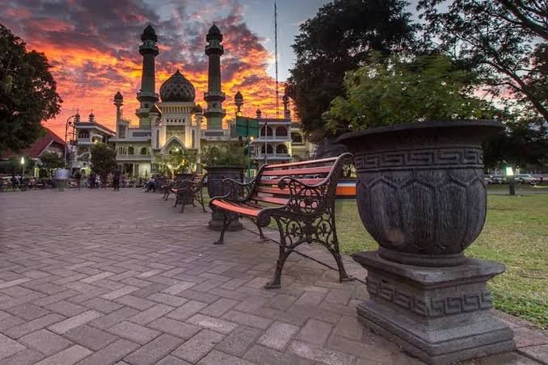

WISATA KOTA
Alun-Alun Malang
Kota Malang, Jawa Timur

Tentang tempat ini
Alun-Alun Merdeka Malang merupakan ruang terbuka di pusat kota yang dapat menjadi tempat bersantai dan menikmati suasana perkotaan.
Informasi kunjungan
Lokasi: Kota Malang, Jawa Timur
Kategori: Wisata kota
Aktivitas: Bersantai dan menikmati suasana kota.
Catatan: Periksa aturan dan kondisi terbaru sebelum berkunjung.
Galeri foto